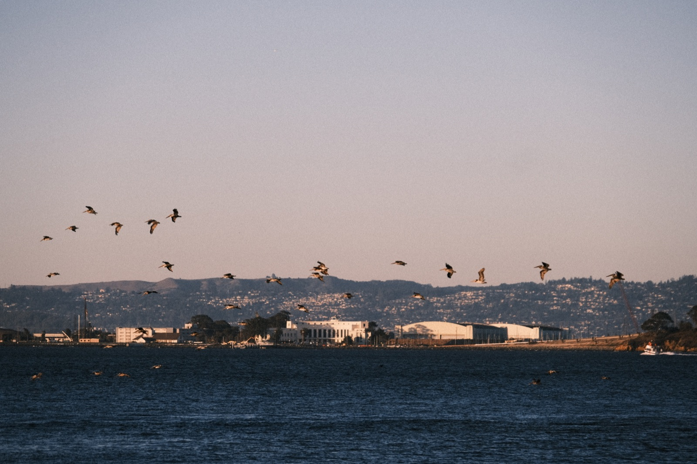
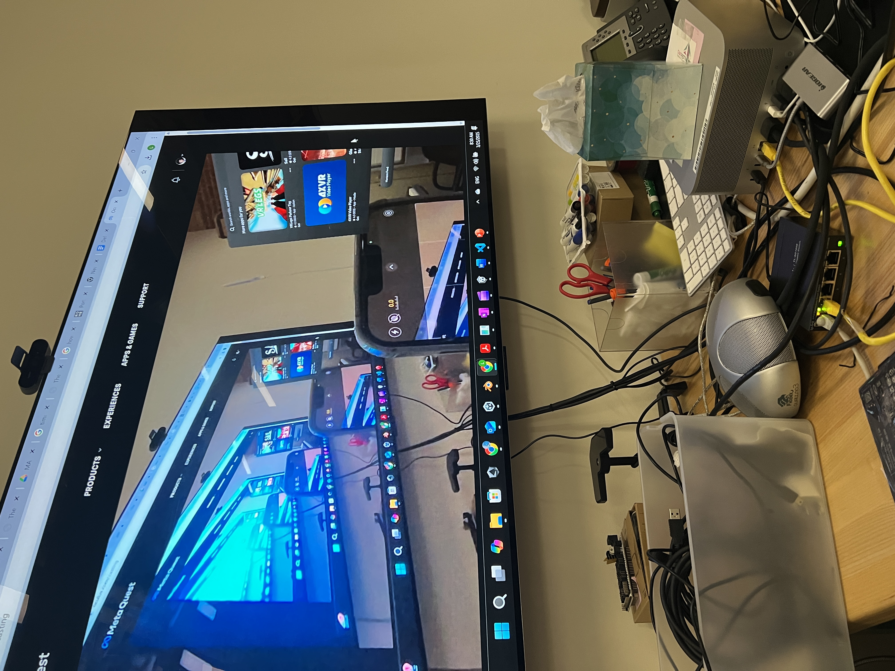

Digital art history · immersive media
Thoughtful.
Curious.
Visually driven.
I create digital experiences by combining design, technology, and storytelling, drawing inspiration from history, culture, and the ways people connect with them.


About me
Where histories become experiences.
I recently graduated from Duke’s MA in Digital Art History / Computational Media. My work brings together research, digital reconstruction, and interactive storytelling.
Selected work